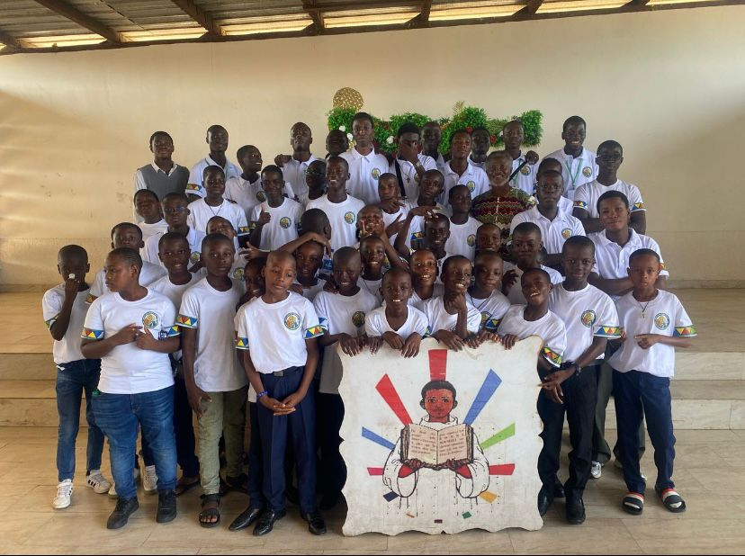

Servir à l'autel avec joie, respect, amour et fidélité.
Le MJSA forme les jeunes de la paroisse Sainte Anne de Port-Bouët au service liturgique depuis 1988.

Ceux qui nous guident

À propos du MJSA
Le Mouvement des Jeunes au Service de l'Autel (MJSA) de la paroisse Sainte Anne de Port-Bouët est une organisation catholique qui rassemble des jeunes désireux de servir Dieu et l'Église à travers le service liturgique. Fondé en 1988, le MJSA forme des servants d'autel compétents, pieux et engagés dans leur foi.
Nous offrons une formation spirituelle, liturgique et humaine aux jeunes qui souhaitent participer activement à la célébration eucharistique. Répétitions les mercredis de 15h à 17h. Formations les dimanches de 15h à 17h.
Bibliothèque média
Photos des activités du MJSA. Touchez une image pour l'agrandir.
Activités et messes
Programme d'activités 2026-2027
| Date | Activité | Lieu |
|---|
NB : ce programme est valable pour l'année 2026-2027. Les dates peuvent être modifiées pour s'accorder aux activités de la paroisse Sainte Anne de Port-Bouët, du MJSA-GB et du MJSA-Secteur Port-Bouët.
Programme des messes hebdomadaires
Rejoindre le MJSA
Remplissez ce formulaire. Un responsable vous contactera.
Votre service, une vocation
Servir à l'autel est un privilège et une grâce. À travers ce ministère, vous participez activement à la liturgie et devenez des témoins de la foi pour toute la communauté.
Le MJSA vous offre une formation complète pour grandir spirituellement tout en apprenant à servir avec dignité et piété.
Nous rejoindre